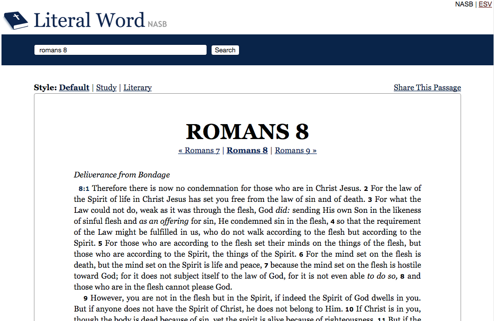
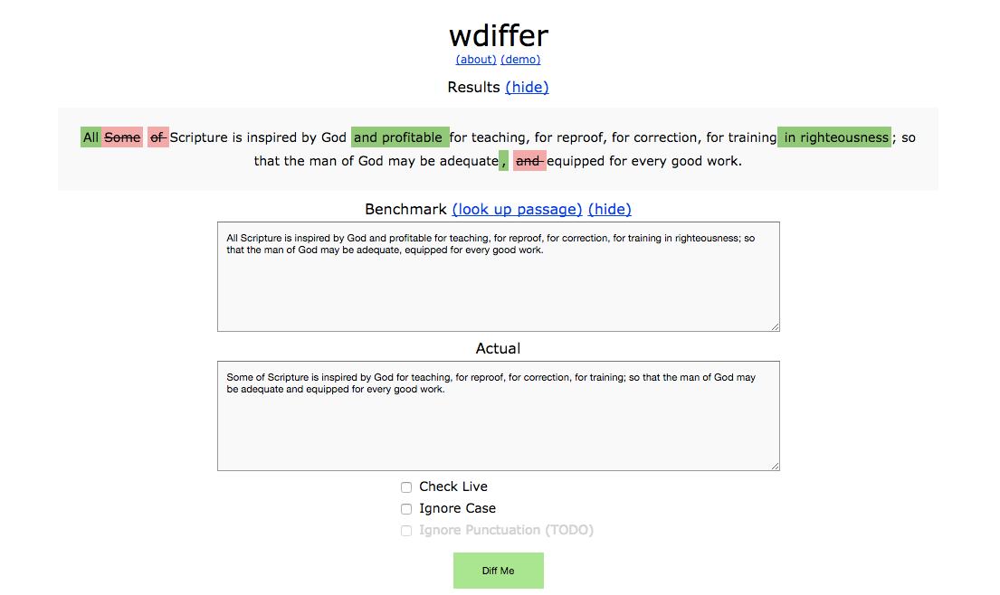

Personal Projects
Some small personal projects that I've worked on.
Literal Word
Two other team members and I built Literal Word in 2011 to be a clean, minimalist, and user-friendly Bible website - no ads, no frames, no logging in, no distractions.
Since its launch, more than 350,000 users from more than 200 countries around the world have viewed more than 5 million passages with zero paid marketing (all word of mouth, with a helpful mention from popular Christian blogger Tim Challies).
More details about Literal Word here.
Event Durations for Google Calendar
Event Durations for Google Calendar is a Chrome extension that calculates and displays event durations on Google Calendar.
I often break my workday into multiple chunks of a few hours each, taking longer breaks for things like exercising or running errands. However, I still want to put in at least 8 hours a day. I wrote Event Durations for Google Calendar to help me easily and quickly organize my work day.
Event Durations for Google Calendar has over 7,000 users with zero marketing of any kind.
Source code for Event Durations for Google Calendar here.
bibleclipper

bibleclipper is an app built on top of Literal Word that makes it easy to look up and copy snippets of Scripture into your clipboard. It's a static site that I wrote to help me more easily take sermon notes.
Source code for bibleclipper here.
wdiffer
I built wdiffer in 2014 as a simple way to compare two blocks of text, with the use case of Bible memorization in mind.
It helps you memorize not only Bible passages, but also meaningful sequences like the names of the 66 books of the Bible, or the 12 tribes of Israel, or any other arbitrary block of text.